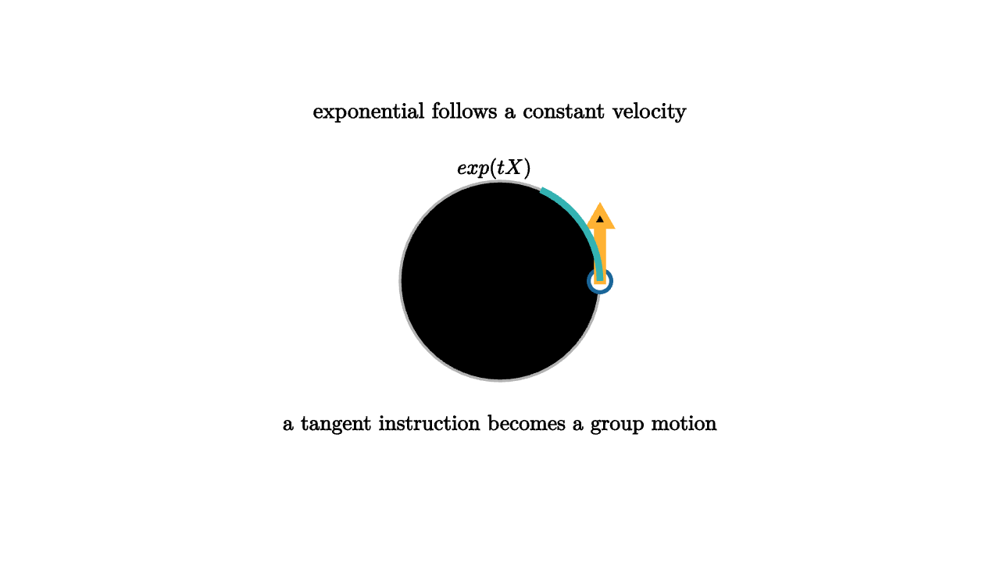

Exponentials Turn Velocities Into Symmetries
A velocity is an instruction, not a destination. "Rotate at one radian per second" tells you how to move. After one second, the instruction has produced a rotation. The exponential map is the mathematical operation that follows a constant infinitesimal motion and returns the group element reached.
For a matrix Lie group, the exponential is the matrix series
When X is in the Lie algebra, exp(X) lies in the group. This turns a tangent-space velocity into an actual symmetry.

source
mesh scene = [
center{1.35u} Text("exponential follows a constant velocity", 0.64),
stroke{LIGHT_GRAY, 2} Circle(0.8),
center{[0.8, 0, 0]} fill{WHITE} stroke{BLUE, 3} Circle(0.09),
stroke{ORANGE, 5} Arrow([0.8, 0, 0], [0.8, 0.58, 0]),
stroke{TEAL, 5} Arc(0.8, [0, 1.15]),
center{[-0.05, 0.9, 0]} Tex("\\exp(tX)", 0.6),
center{1.15d} Text("a tangent instruction becomes a group motion", 0.62)
]For rotations in the plane, the infinitesimal generator is
The exponential gives
The trigonometric rotation matrix is a matrix exponential. Sine and cosine appear because repeatedly applying the tiny quarter-turn generator cycles through directions.
source
let Step = |amount| [
stroke{LIGHT_GRAY, 2} Circle(0.78),
center{[0.78 * cos(amount), 0.78 * sin(amount), 0]} fill{alpha{0.26} ORANGE} stroke{ORANGE, 3} Circle(0.12),
stroke{TEAL, 5} Arc(0.78, [0, amount]),
center{[0, -1.05, 0]} Tex("R(\\theta)=\\exp(\\theta J)", 0.62)
]
"Start"
mesh title = center{1.34u} Text("constant algebra velocity traces a one-parameter subgroup", 0.62)
mesh path = Step(0.25)
play Fade(0.7)
"Flow"
path = Step(1.25)
play Lerp(1.2)
"Fuller Motion"
path = Step(2.35)
play Lerp(1.2)The curve t -> exp(tX) is a one-parameter subgroup. It starts at the identity, moves with velocity X, and satisfies
This law says that flowing for s+t time equals flowing for s time and then t time under the same constant command.
In robotics, this is how a twist becomes a pose update. A twist in se(3) contains angular and linear velocity. Exponentiating it gives a rigid transformation in SE(3). A motion planner can integrate small commands by composing exponentials, and an optimizer can apply corrections by exponentiating a small error vector.
In numerical simulation, exponentials help preserve constraints. If a system's state is a rotation matrix, ordinary Euler updates can drift away from orthogonality. Updating by R <- exp(dt X) R keeps R on the rotation group. The state remains a valid rotation after every step because the update is built from group elements.
The exponential map is local in a subtle way. Near the identity, it is usually an excellent coordinate chart. Farther away, multiple algebra elements may map to the same group element. On the circle, angles differing by 2pi produce the same rotation. In SO(3), rotations by angle pi require special care. The map is powerful, and its geometry still matters.
The logarithm map runs the story backward when possible. Given a group element near the identity, the logarithm finds the Lie algebra element whose exponential produced it. This is why algorithms often alternate between log and exp: take a nonlinear difference by logging, compute in a vector space, then return to the group by exponentiating.
The lesson is that a Lie algebra element is a velocity with algebraic structure, and the exponential is the bridge from command to motion. It is the reason linear calculations can control nonlinear symmetries without abandoning the group.